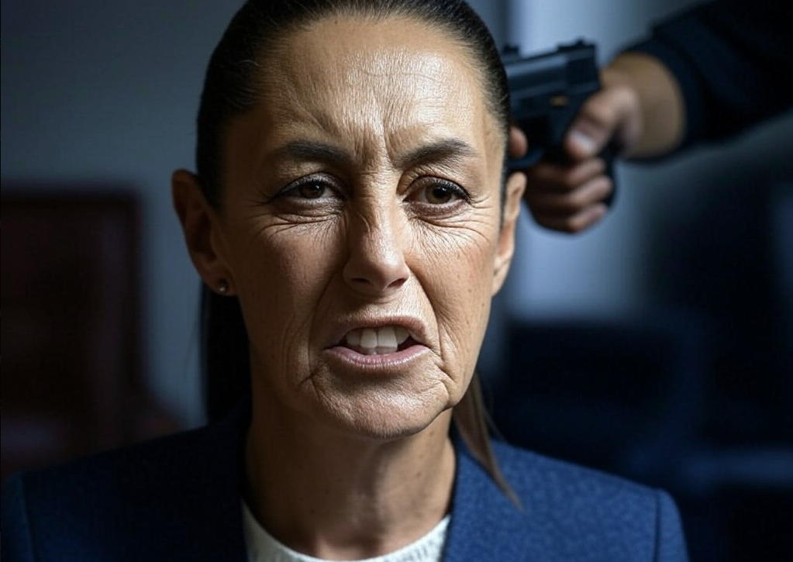
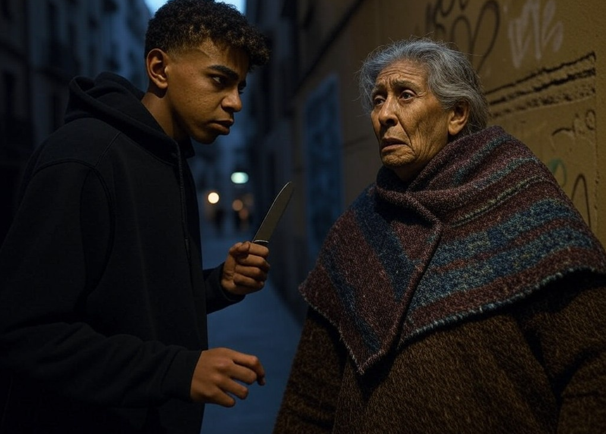

La presidenta de México sigue exigiendo que España se disculpe
Como ya es costumbre con Claudia Sheinbaum, cuando aumenta la criminalidad y homidicios en el país, suele volver a exigir a España que pida perdón por la conquista de México. Esta vez ha declado lo siguiente: "Pinche España devuelvan el oro, que mi familia de origen judío sufrió mucho en 1519 a manos del pinche Hernán Cortés. Pidan perdón o mis amigos los narcos los pican. Viva México cabronessss."
Lamine Yamal robando en el Raval (Otra vez)
Lamine Yamal es pillado con las manos en la masa robando a una pobre peruana a punta de cuchillo, la cuál acababa de sacar el dinero que su hijo le había mandado desde Mayobamba. Lamine esperó a que la señora sacara el dinero para abalanzarse sobre ella y amenazarla con un cuchillo. Por suerte había varias personas observando tan atroz acto, dos personas inmovilizaron a Lamine hasta que llegó la policía y otra persona tomó la foto. El astro "español" se ha pronunciado tras los hechos: "Estas son mis constumbres y las tenéis que respetar. Viva Mohamed VI."